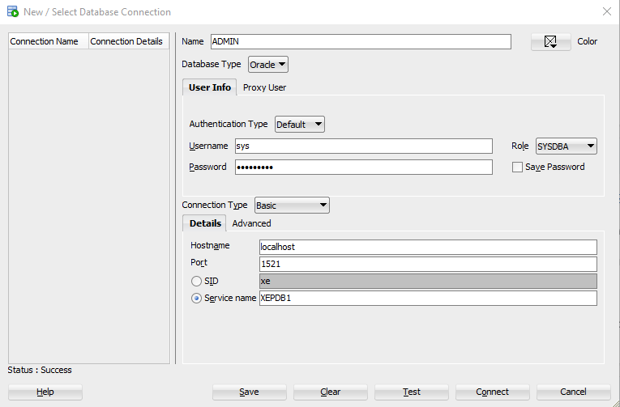

Aula 02
Criando usuários e conexões dentro do Oracle Database
Anotações da aula
Criando usuário SYS
- Name: ADMIN
- Username: sys (nome padrão do sistema)
- Password: senha cadastrada ao instalar o DB
- Role: SYSDBA (Nível mais alto de permissão de uma banco de dados = modo deus)
- Criar ou apagar bancos de dados.
- Executar backup e recovery.
- Gerenciar usuários e permissões sem restrições.
- Abrir/montar/desmontar o banco (STARTUP e SHUTDOWN).
- Service name: XEPDB1 (eXpress Edition Pluggable Database 1)
- No Oracle XE (Express Edition), quando você instala o banco de dados, ele cria automaticamente alguns containers e pluggable databases (PDBs).
- CDB (Container Database): É o “banco de dados principal” que contém informações de controle e metadados dos bancos que podem ser conectados a ele.
- PDB (Pluggable Database): É um “banco de dados plugável”, que funciona como um banco de dados separado dentro do CDB.
- No Oracle XE 18c/21c:
- XEPDB1 é o pluggable database padrão criado automaticamente durante a instalação.
- Ele é o PDB que você geralmente conecta para criar tabelas, usuários e executar queries.
- Resumindo: XEPDB1 é o nome do banco de dados “pronto para usar” dentro do Oracle XE. É nele que você vai trabalhar normalmente.
- Test: Clicando em testar, o DB vai testar se todos os inputs colocados foram corretos.
- Status: Sucess: essa é a mensagem que vai aparecer se tudo estiver correto.
Para criar o usuário admin do sistema, teremos que colocar as seguintes configurações:
SYSDBA permite:
Explicação: